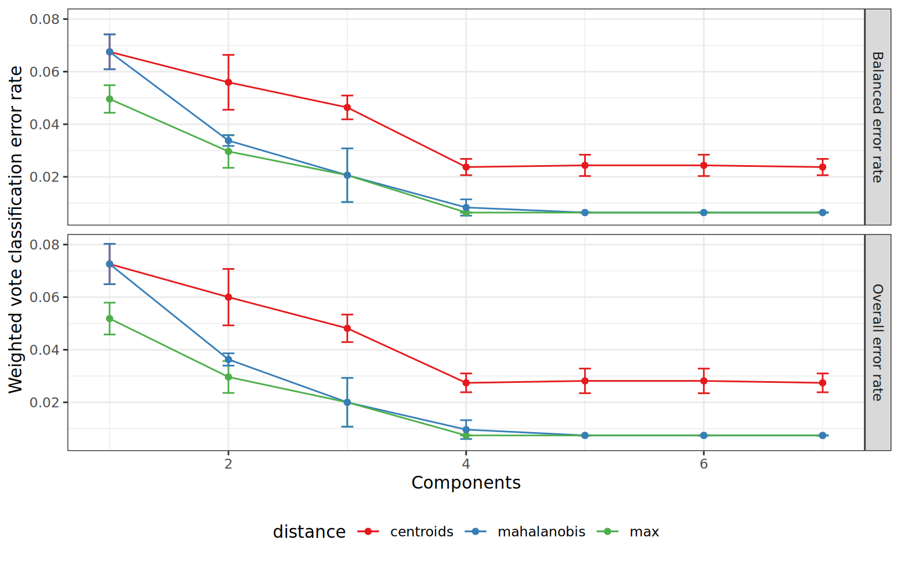
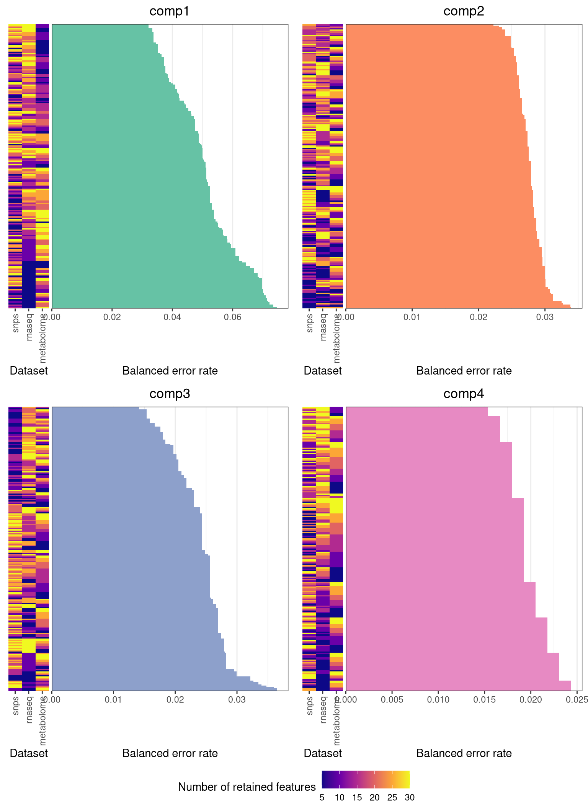
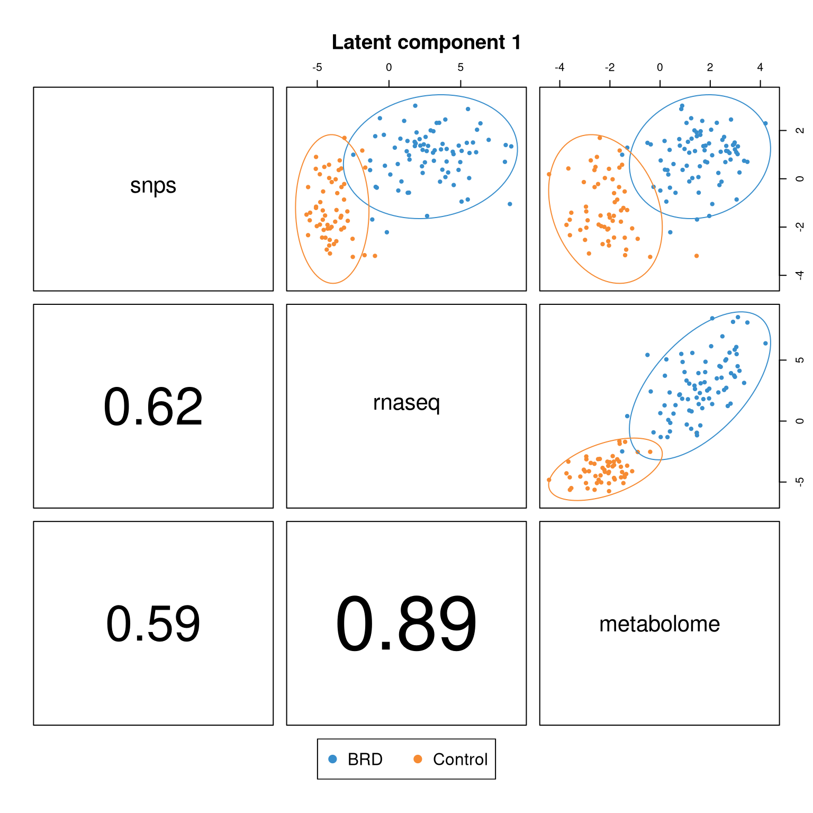
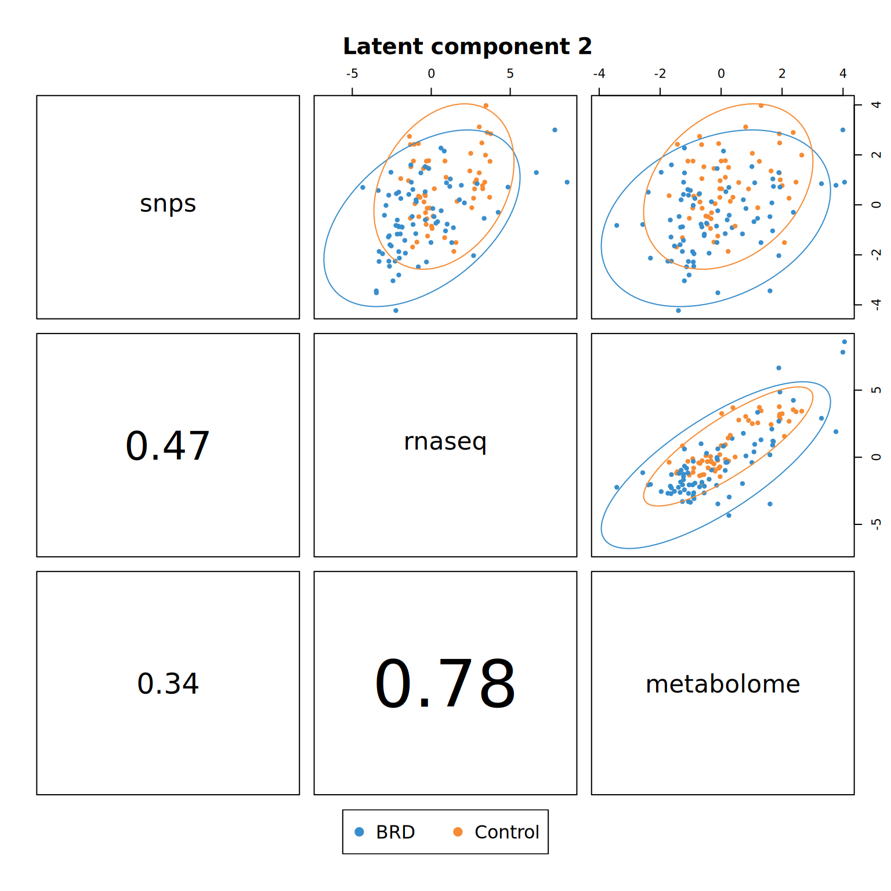
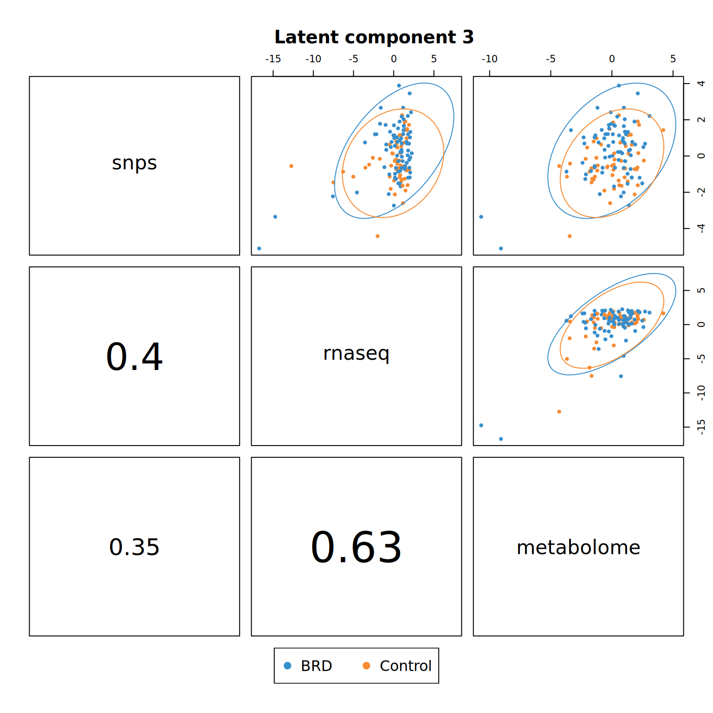
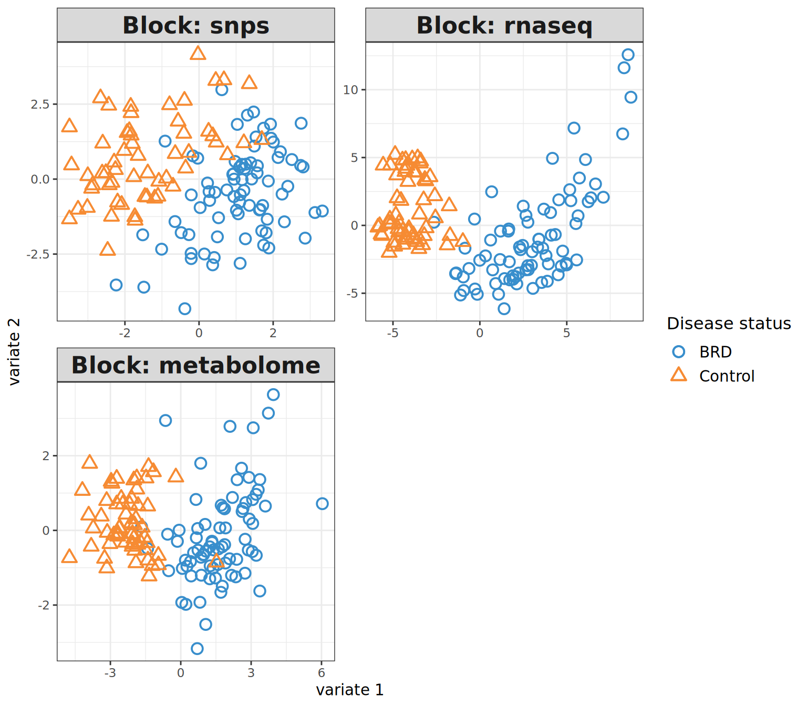
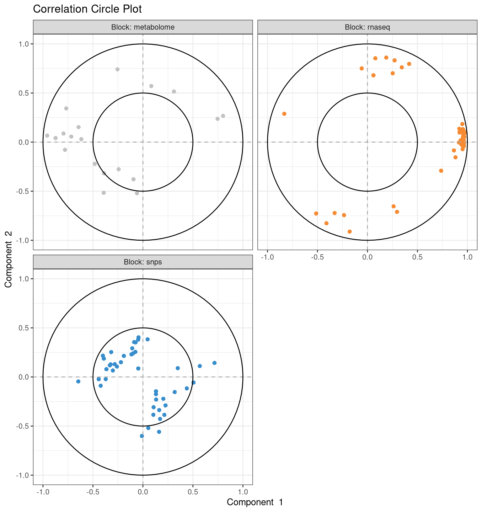
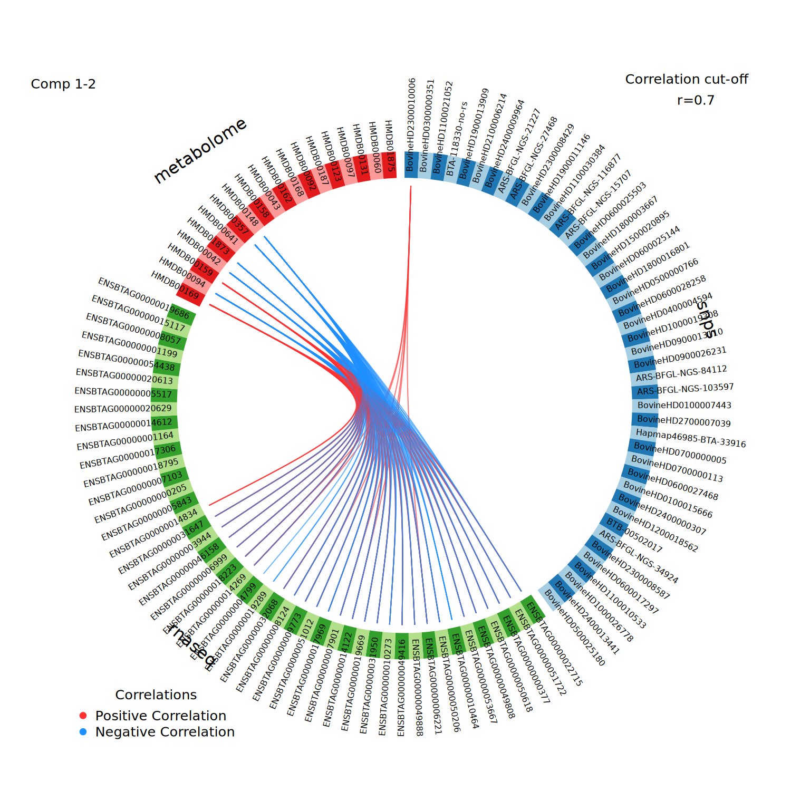
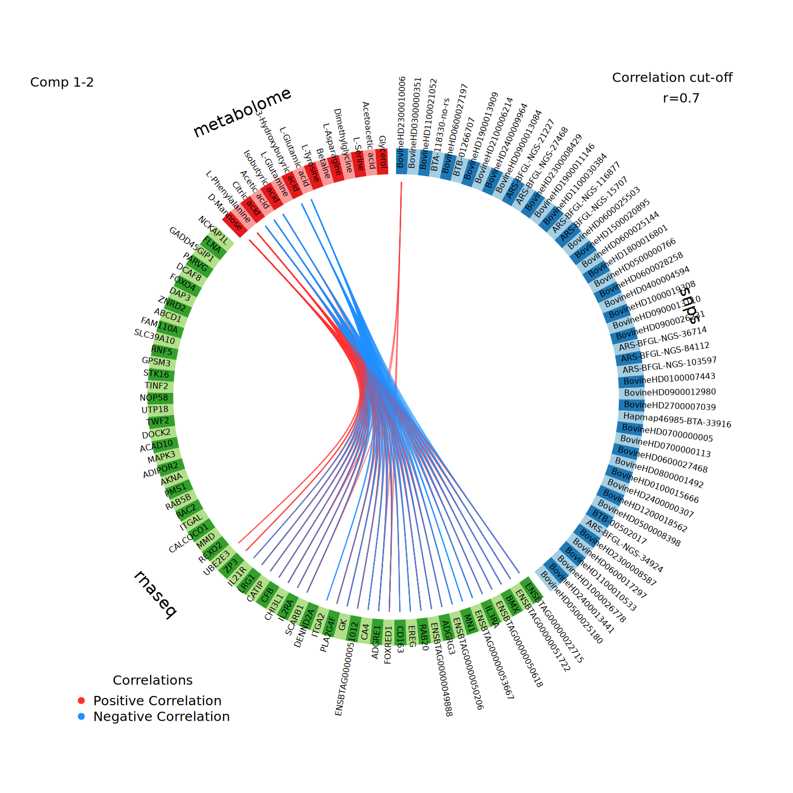

10 Integration with DIABLO
Now that the omics datasets have been appropriately pre-processed and pre-filtered, we are ready to perform the actual data integration step. In this chapter, we will show how to perform multi-omics data integration with the DIABLO method from the mixOmics package.
As a reminder, here is what the _targets.R script should look like so far:
_targets.R script
library(targets)
library(tarchetypes)
library(moiraine)
tar_option_set(
packages = c(
"moiraine",
"MOFA2",
"mixOmics",
"readr",
"tibble",
"tidyr",
"dplyr",
"ggplot2",
"patchwork"
)
)
list(
# Importing data ---------------------------------------------------------------
## Data import using a target factory
import_dataset_csv_factory(
files = c(
system.file("extdata/genomics_dataset.csv", package = "moiraine"),
system.file("extdata/transcriptomics_dataset.csv", package = "moiraine"),
system.file("extdata/metabolomics_dataset.csv", package = "moiraine")
),
col_ids = c("marker", "gene_id", "sample_id"),
features_as_rowss = c(TRUE, TRUE, FALSE),
target_name_suffixes = c("geno", "transcripto", "metabo")
),
## Genomics features metadata file
tar_target(
fmetadata_file_geno,
system.file("extdata/genomics_features_info.csv", package = "moiraine"),
format = "file"
),
## Genomics features metadata import
tar_target(
fmetadata_geno,
import_fmetadata_csv(
fmetadata_file_geno,
col_id = "marker",
col_types = c("chromosome" = "c")
)
),
## Metabolomics features metadata import
import_fmetadata_csv_factory(
files = c(
system.file("extdata/metabolomics_features_info.csv", package = "moiraine")
),
col_ids = c("feature_id"),
target_name_suffixes = c("metabo")
),
## Transcriptomics features metadata import
import_fmetadata_gff_factory(
files = system.file("extdata/bos_taurus_gene_model.gff3", package = "moiraine"),
feature_types = "genes",
add_fieldss = c("Name", "description"),
target_name_suffixes = "transcripto"
),
## Samples metadata import
import_smetadata_csv_factory(
files = system.file("extdata/samples_info.csv", package = "moiraine"),
col_ids = "animal_id",
target_name_suffixes = "all"
),
## Creating omics sets for each dataset
create_omics_set_factory(
datasets = c(data_geno, data_transcripto, data_metabo),
omics_types = c("genomics", "transcriptomics", "metabolomics"),
features_metadatas = c(fmetadata_geno, fmetadata_transcripto, fmetadata_metabo),
samples_metadatas = c(smetadata_all, smetadata_all, smetadata_all)
),
## Creating the MultiDataSet object
tar_target(
mo_set,
create_multiomics_set(
list(set_geno,
set_transcripto,
set_metabo)
)
)
# Inspecting the `MultiDataSet` object -----------------------------------------
## Creating a density plot for each dataset
tar_target(
density_plots,
plot_density_data(
mo_set,
combined = FALSE,
scales = "free"
)
),
## Plotting the relationship between features mean and standard deviation
## for each dataset
tar_target(
mean_sd_plots,
plot_meansd_data(mo_set)
),
## Assessing missing values
tar_target(
n_missing_values,
check_missing_values(mo_set)
)
# Modifying the `MultiDataSet` object ------------------------------------------
## RNAseq differential expression results file
tar_target(
rnaseq_de_res_file,
system.file(
"extdata/transcriptomics_de_results.csv",
package = "moiraine"
),
format = "file"
),
## Reading the RNAseq differential expression results
tar_target(
rnaseq_de_res_df,
read_csv(rnaseq_de_res_file) |>
rename(feature_id = gene_id) |>
mutate(dataset = "rnaseq")
),
## Adding the differential expression results to the MultiDataSet object
tar_target(
mo_set_de,
add_features_metadata(mo_set, rnaseq_de_res_df)
)
# Data pre-processing ----------------------------------------------------------
## Applying transformations to the datasets
transformation_datasets_factory(
mo_set_de,
c("rnaseq" = "vst-deseq2",
"metabolome" = "logx"),
log_bases = 2,
pre_log_functions = zero_to_half_min,
transformed_data_name = "mo_set_transformed"
),
## Density plot for each transformed dataset
tar_target(
density_plots_transformed,
plot_density_data(
mo_set_transformed,
combined = FALSE,
scales = "free"
)
),
## Plotting the mean-SD trend for transformed each dataset
tar_target(
mean_sd_plots_transformed,
plot_meansd_data(mo_set_transformed)
),
## Summary table of the transformations applied
tar_target(
transformation_summary,
get_table_transformations(transformations_runs_list)
),
## Running a PCA on each dataset
pca_complete_data_factory(
mo_set_transformed,
complete_data_name = "mo_set_complete"
),
## PCA screeplots
tar_target(
pca_screeplots,
plot_screeplot_pca(pca_runs_list)
),
## PCA sample plots
tar_target(
pca_sample_plots,
plot_samples_coordinates_pca(
pca_runs_list,
datasets = "snps",
pcs = 1:3,
mo_data = mo_set_de,
colour_upper = "geno_comp_cluster",
shape_upper = "status",
colour_lower = "feedlot"
)
)
# Dataset pre-filtering --------------------------------------------------------
## Unsupervised feature selection based on MAD score
feature_preselection_mad_factory(
mo_set_complete,
to_keep_ns = c("snps" = 1000, "rnaseq" = 1000),
with_ties = TRUE,
filtered_set_target_name = "mo_presel_unsupervised"
),
## Diagnostic plot for MAD-based feature selection
tar_target(
preselection_mad_plot,
plot_feature_preselection_mad(individual_mad_values)
),
## Supervised feature selection based on bruising groups
feature_preselection_splsda_factory(
mo_set_complete,
group = "status",
to_keep_ns = c("snps" = 1000, "rnaseq" = 1000),
filtered_set_target_name = "mo_presel_supervised"
),
## Diagnostic plot for sPLS-DA based feature selection
tar_target(
preselection_splsda_plot,
plot_feature_preselection_splsda(individual_splsda_perf)
)
# Integration with sPLS --------------------------------------------------------
## Creating sPLS input
tar_target(
spls_input,
get_input_spls(
mo_presel_supervised,
mode = "canonical",
datasets = c("rnaseq", "metabolome")
)
),
## Initial PLS run with no feature selection and large number of components
tar_target(
spls_novarsel,
spls_run(
spls_input,
ncomp = 4
)
),
## Cross-validation for number of components
tar_target(
spls_perf_res,
mixOmics::perf(
spls_novarsel,
validation = "Mfold",
folds = 10,
nrepeat = 10,
cpus = 3
)
),
## Plotting cross-validation results (for number of components)
## Can try criterion = 'Q2.total', 'cor.tpred', 'cor.upred', 'RSS.tpred',
## 'RSS.upred' (but avoid 'RSS' and 'PRESS')
tar_target(
spls_perf_plot,
plot(spls_perf_res, criterion = "Q2.total")
),
## Selected value for ncomp
tar_target(
spls_optim_ncomp,
spls_get_optim_ncomp(spls_perf_res, min_ncomp = 2)
),
## Cross-validation for number of features to retain
tar_target(
spls_tune_res,
spls_tune(
spls_input,
ncomp = spls_optim_ncomp,
keepX = seq(10, 100, 10),
keepY = seq(10, 100, 10),
validation = "Mfold",
folds = 10,
nrepeat = 5,
measure = "cor",
cpus = 3
)
),
## Plotting cross-validation results (for number of features)
tar_target(
spls_tune_plot,
spls_plot_tune(spls_tune_res)
),
## Final sPLS run
tar_target(
spls_final_run,
spls_run(
spls_input,
ncomp = spls_optim_ncomp,
keepX = spls_tune_res$choice.keepX,
keepY = spls_tune_res$choice.keepY
)
)
# Integration with sO2PLS ------------------------------------------------------
## Creating sO2PLS input
tar_target(
omicspls_input,
get_input_omicspls(
mo_presel_supervised,
datasets = c("rnaseq", "metabolome")
)
),
## Adjusted cross-validation for number of components
tar_target(
so2pls_cv_adj,
so2pls_crossval_o2m_adjR2(
omicspls_input,
a = 1:5,
ax = seq(0, 10, by = 2),
ay = seq(0, 10, by = 2),
nr_folds = 10,
nr_cores = 6,
seed = 127
)
),
tar_target(
so2pls_cv_adj_res,
so2pls_get_optim_ncomp_adj(so2pls_cv_adj)
),
## Plotting adjusted cross-validation results
tar_target(
so2pls_cv_adj_plot,
so2pls_plot_cv_adj(so2pls_cv_adj)
),
## Standard cross-validation for number of components
tar_target(
so2pls_cv,
so2pls_crossval_o2m(
omicspls_input,
so2pls_cv_adj,
nr_folds = 10,
nr_cores = 6,
seed = 356
)
),
tar_target(
so2pls_cv_res,
so2pls_get_optim_ncomp(so2pls_cv)
),
## Plotting standard cross-validation results
tar_target(
so2pls_cv_plot,
so2pls_plot_cv(so2pls_cv)
),
## Cross-validation for sparsity parameters
tar_target(
so2pls_cv_sparsity,
so2pls_crossval_sparsity(
omicspls_input,
n = so2pls_cv_res["n"],
nx = so2pls_cv_res["nx"],
ny = so2pls_cv_res["ny"],
nr_folds = 10,
keepx_seq = c(seq(5, 30, 5), seq(40, 100, 10)),
keepy_seq = c(seq(5, 40, 5))
)
),
tar_target(
so2pls_cv_sparsity_res,
so2pls_get_optim_keep(so2pls_cv_sparsity)
),
## Plotting the results of the cross-validation for the number of features
## to retain from each dataset for the different joint components
tar_target(
so2pls_cv_sparsity_plot,
so2pls_plot_cv_sparsity(so2pls_cv_sparsity)
),
## Extracting sparsity results in table format
tar_target(
so2pls_cv_sparsity_table,
so2pls_print_cv_sparsity(so2pls_cv_sparsity_res)
),
## Final sO2PLS run
tar_target(
so2pls_final_run,
so2pls_o2m(
omicspls_input,
so2pls_cv_res,
so2pls_cv_sparsity_res
)
),
## Summary plot of percentage of variance explained
tar_target(
so2pls_summary_plot,
so2pls_plot_summary(so2pls_final_run)
),
## Screeplot
tar_target(
so2pls_screeplot,
so2pls_screeplot(so2pls_final_run)
),
## Comparison of samples score for joint components
tar_target(
so2pls_joint_components_comparison_plot,
so2pls_compare_samples_joint_components(
so2pls_final_run,
mo_data = mo_set_de,
colour_by = "status",
shape_by = "feedlot"
)
),
## Coefficient plot for joint components
tar_target(
so2pls_joint_components_coefficients_plot,
so2pls_plot_joint_components_coefficients(so2pls_final_run)
),
## Joint component samples score plot
tar_target(
so2pls_joint_components_samples_score_plot,
so2pls_plot_samples_joint_components(
so2pls_final_run,
mo_data = mo_set_de,
colour_upper = "status",
scale_colour_upper = scale_colour_brewer(palette = "Paired"),
shape_upper = "feedlot"
) +
theme(legend.box = "vertical")
),
## Specific components samples score plot
tar_target(
so2pls_specific_components_samples_score_plot,
so2pls_plot_samples_specific_components(
so2pls_final_run,
mo_data = mo_set_de,
colour_upper = "feedlot",
scale_colour_upper = scale_colour_brewer(palette = "Paired"),
colour_lower = "rnaseq_batch",
shape_upper = "gender"
) |>
map(\(x) x + theme(legend.box = "vertical"))
)
# Integration with MOFA --------------------------------------------------------
## Creating MOFA input
tar_target(
mofa_input,
get_input_mofa(
mo_presel_supervised,
options_list = list(
data_options = list(scale_views = TRUE),
model_options = list(likelihoods = c(
"snps" = "poisson",
"rnaseq" = "gaussian",
"metabolome" = "gaussian")
),
training_options = list(seed = 43)
),
only_common_samples = FALSE
)
),
## Overview plot of the samples in each dataset
tar_target(
mofa_input_plot,
plot_data_overview(mofa_input)
),
## Training MOFA model
tar_target(
mofa_trained,
run_mofa(
mofa_input,
save_data = TRUE,
use_basilisk = TRUE
)
),
## Formatting MOFA output
tar_target(
mofa_output,
get_output(mofa_trained)
),
## Plots of variance explained
tar_target(
mofa_var_explained_plot,
plot_variance_explained(
mofa_trained,
x = "view", ## datasets on the x-axis
y = "factor" ## factors on the y-axis
)
),
tar_target(
mofa_total_var_explained_plot,
plot_variance_explained(
mofa_trained,
x = "view",
y = "factor",
plot_total = TRUE
)[[2]]
),
## Plot of factors correlation with covariates
tar_target(
mofa_factors_covariates_cor_plot,
mofa_plot_cor_covariates(mofa_trained)
)
)10.1 What is DIABLO?
DIABLO (for Data Integration Analysis for Biomarker discovery using Latent Components) is a multivariate approach to perform supervised data integration. Given two or more omics datasets for which measurements are taken on the same samples, DIABLO aims at selecting correlated features across the datasets that best discriminate between the different sample groups for a categorical outcome of interest.
DIABLO works by iteratively constructing linear combinations of the features, called latent components, which maximise the correlation between the datasets and with the categorical outcome. In order to perform feature selection, the latent components are subjected to \(L1\)-regularisation (or LASSO), i.e. the number of features included in the linear combination is constrained by the user. Moreover, the optimisation problem is weighted to allow the user to control the balance between maximising the correlation between omics datasets and discriminating between the outcome groups of interest.
DIABLO requires as input the matrices of omics measurements, all with the same samples, as well as a factor variable indicating the outcome group for each sample. While the omics datasets are automatically centred and scaled by DIABLO, proper preprocessing and normalisation is assumed to be carried out by the user. Although the DIABLO algorithm can handle the presence of missing features, it will prohibit the use of cross-validation. It is thus recommended to perform data imputation prior to running a DIABLO analysis. Importantly, DIABLO tends to perform better when the number of features in the datasets is not too large. Therefore, it is highly recommended to perform some prefiltering prior to using DIABLO.
10.2 Creating the DIABLO input
The first step is to transform the MultiDataSet object into a suitable format for the mixOmics package. This is done with the get_input_mixomics_supervised() function, which takes as input:
a
MultiDataSetobject,the name of the column in the samples metadata table that corresponds to the categorical outcome of interest,
optionally, the names of the datasets to include in the analysis. This is useful if we want to exclude one of more datasets from the analysis.
In our case, we want to find differences between the healthy and diseased animals. We will use the multi-omics datasets that have gone through supervised prefiltering (i.e. we discarded the features least related with the disease status, as seen in Chapter 6).
tar_target(
diablo_input,
get_input_mixomics_supervised(
mo_presel_supervised,
group = "status"
)
)Importantly, the get_input_mixomics_supervised() function only retains samples that are present in all omics datasets to be analysed. It also makes sure that the column provided as categorical outcome does not contain numerical values, as DIABLO can only handle categorical outcome. If the column contains integers, they will be considered as levels of a factor.
The result of the function is a named list with one element per dataset to integrate, plus a Y element that contains the categorical outcome. The omics datasets are stored as matrices with samples as rows and features as columns; the categorical outcome is a named factor vector.
tar_load(diablo_input)
str(diablo_input)
#> List of 4
#> $ snps : num [1:135, 1:1000] 2 1 2 2 2 2 1 2 2 2 ...
#> ..- attr(*, "dimnames")=List of 2
#> .. ..$ : chr [1:135] "R21" "Y3660" "Y3243" "R5764" ...
#> .. ..$ : chr [1:1000] "21-25977541-C-T-rs41974686" "22-51403583-A-C-rs210306176" "24-12959068-G-T-rs381471286" "8-85224224-T-C-rs43565287" ...
#> ..- attr(*, "datatype")= chr "SnpSet"
#> .. ..- attr(*, "package")= chr "Biobase"
#> $ rnaseq : num [1:135, 1:994] 3.87 4.97 4.08 3.49 3.49 ...
#> ..- attr(*, "dimnames")=List of 2
#> .. ..$ : chr [1:135] "R21" "Y3660" "Y3243" "R5764" ...
#> .. ..$ : chr [1:994] "ENSBTAG00000000020" "ENSBTAG00000000046" "ENSBTAG00000000056" "ENSBTAG00000000061" ...
#> ..- attr(*, "datatype")= chr "ExpressionSet"
#> .. ..- attr(*, "package")= chr "Biobase"
#> $ metabolome: num [1:135, 1:55] 3.19 3.28 3.22 3.72 3.63 ...
#> ..- attr(*, "dimnames")=List of 2
#> .. ..$ : chr [1:135] "R21" "Y3660" "Y3243" "R5764" ...
#> .. ..$ : chr [1:55] "HMDB00001" "HMDB00008" "HMDB00042" "HMDB00043" ...
#> ..- attr(*, "datatype")= chr "MetabolomeSet"
#> .. ..- attr(*, "package")= chr "moiraine"
#> $ Y : Factor w/ 2 levels "BRD","Control": 2 2 2 2 1 2 2 2 2 2 ...
#> ..- attr(*, "names")= chr [1:135] "R21" "Y3660" "Y3243" "R5764" ...10.3 Constructing the design matrix
DIABLO relies on a design matrix to balance its two optimisation objectives: maximising the covariance between the omics datasets, and maximising the discrimination between the outcome categories. The design matrix is a matrix with one row and one column per dataset, plus a row and a column for the "Y" dataset, i.e. the categorical outcome. The values within each cell of the matrix indicate the ratio between the two objectives for this combination of dataset. A value of 0 means that we want to prioritise outcome discrimination, while a value of 1 indicates that we want to prioritise maximising the covariance between the two corresponding datasets. All values must be between 0 and 1.
There are two options for constructing the design matrix, which we present below.
10.3.1 Predefined design matrices
A first option is to choose a strategy based on what we are trying to obtain from the integration:
- if we want to strike a balance between the two objectives (recommended option), we’ll constructed a “weighted full” design matrix that looks like this:
diablo_predefined_design_matrix(names(diablo_input), "weighted_full")
#> snps rnaseq metabolome Y
#> snps 0.0 0.1 0.1 1
#> rnaseq 0.1 0.0 0.1 1
#> metabolome 0.1 0.1 0.0 1
#> Y 1.0 1.0 1.0 0- if we want to maximise the discrimination between the outcome categories, we’ll construct a “null” design matrix that looks like this:
diablo_predefined_design_matrix(names(diablo_input), "null")
#> snps rnaseq metabolome Y
#> snps 0 0 0 1
#> rnaseq 0 0 0 1
#> metabolome 0 0 0 1
#> Y 1 1 1 0- if we want only to maximise the covariance between the datasets, we’ll construct a “full” design matrix that looks like this:
diablo_predefined_design_matrix(names(diablo_input), "full")
#> snps rnaseq metabolome Y
#> snps 0 1 1 1
#> rnaseq 1 0 1 1
#> metabolome 1 1 0 1
#> Y 1 1 1 0We will show how to use these pre-defined design matrices when running DIABLO.
10.3.2 Estimating the design matrix through pairwise PLS
Alternatively, we can let the data guide the construction of the design matrix. This is achieved by assessing the correlation between each pair of datasets, through a PLS (Projection to Latent Structures) run. More specifically, the correlation between the datasets is computed as the correlation coefficient between the first component constructed for each dataset during the PLS run. Then, based on the correlation obtained between a pair of dataset, we can decide on a value to use for the design matrix. Typically, the following thresholds are recommended by the authors of the mixOmics package:
correlation coefficient of 0.8 or above between two datasets: assign a value of 1 in the corresponding cell of the design matrix;
correlation coefficient below 0.8: assign a value of 0.1 in the corresponding cell of the design matrix.
The diablo_pairwise_pls_factory() function automates this process. It takes as input the DIABLO input object that we constructed previously:
diablo_pairwise_pls_factory(diablo_input)The function works as follows:
- It creates a list of all possible pairs of datasets, which is stored in the
diablo_pairs_datasetstarget:
tar_read(diablo_pairs_datasets)
#> [[1]]
#> [1] "snps" "rnaseq"
#>
#> [[2]]
#> [1] "snps" "metabolome"
#>
#> [[3]]
#> [1] "rnaseq" "metabolome"- It uses dynamic branching to perform a PLS run on each pair of datasets, via the
run_pairwise_pls()function. The results are stored as a list in thediablo_pls_runs_listtarget. Each element of the list has adatasets_nameattribute to indicate which datasets were analysed:
- It constructs the estimated correlation matrix between the datasets, based on the results of the PLS runs, via the
diablo_get_pairwise_pls_corr()function. The resulting matrix is available through thediablo_pls_correlation_matrixtarget:
tar_read(diablo_pls_correlation_matrix)
#> snps rnaseq metabolome
#> snps 1.0000000 0.6474490 0.6263349
#> rnaseq 0.6474490 1.0000000 0.8607195
#> metabolome 0.6263349 0.8607195 1.0000000- It constructs the design matrix according to the datasets correlation matrix, through the
diablo_generate_design_matrix()function. This function has parameters to customise how the correlation matrix should be translated into a design matrix, notably by setting the threshold to use on the correlation coefficients (default is 0.8, as recommended). These arguments can be customised in thediablo_pairwise_pls_factory()function. The resulting design function is stored in the targetdiablo_design_matrix:
tar_read(diablo_design_matrix)
#> snps rnaseq metabolome Y
#> snps 0.0 0.1 0.1 1
#> rnaseq 0.1 0.0 1.0 1
#> metabolome 0.1 1.0 0.0 1
#> Y 1.0 1.0 1.0 010.4 Choosing the number of latent components
One important parameter that must be set when performing a DIABLO analysis is the number of latent components to construct for each dataset. The optimal number of components can be estimated by cross-validation, implemented in the mixOmics::perf() function. This function assesses the classification performance (i.e. how well the different outcome groups are separated) achieved by DIABLO for different numbers of latent components.
Choosing the optimal number of latent components to construct is a multi-step process. The first step is to run DIABLO without feature selection, setting the number of latent components to the maximum value we wish to test. We recommend to set this to the number of groups in the categorical outcome + 2, which in our case equals 4; however this can be further refined after checking the results. For this example, we will set the maximum to 7. This is done through the diablo_run() function, which is a wrapper for the mixOmics::block.splsda() function. The function also requires as input the design matrix to be used; here we will use the one constructed from the PLS runs:
tar_target(
diablo_novarsel,
diablo_run(
diablo_input,
diablo_design_matrix,
ncomp = 7
)
)Alternatively, if we want to use one of the predefined design matrices, we can pass on one of 'null', 'weighted_full' or 'full' instead of the computed diablo_design_matrix, e.g.:
tar_target(
diablo_novarsel,
diablo_run(
diablo_input,
"weighted_full",
ncomp = 7
)
)Then, we call the mixOmics::perf() function on the result of this first DIABLO run. There are a number of parameters to set:
validation: the type of cross-validation to perform, M-fold ("Mfold") or leave-one-out ("loo"). We recommend to use M-fold validation, except when the number of samples is very small.folds: for M-fold cross-validation, the number of folds to construct, i.e. the number of groups in which to split the samples. Each group in turn will be considered as test set while the remaining groups will be considered the training set. The value to use depends on the number of samples in the datasets. By default, 10 is a reasonable number. For leave-one-out cross-validation, this parameter is set to the number of samples (that is the principle of leave-one-out cross-validation).nrepeat: the number of times the cross-validation will be repeated. This is important for M-fold cross-validation, as the way the samples are split into groups affects the results. Therefore, by repeating the cross-validation scheme we’re averaging the results over different splits, thus reducing the impact of samples splitting. We recommend at least 10 repeats. Irrelevant for leave-one-out cross-validation, so can be left to 1.cpus: number of CPUs to use for the computation. Useful iffolds\(\times\)repeatsis large, as this can be computationally intensive.
Here we’ll perform a 10-fold cross validation with 10 repeats.
tar_target(
diablo_perf_res,
mixOmics::perf(
diablo_novarsel,
validation = "Mfold",
folds = 10,
nrepeat = 10,
cpus = 3
)
)We can visualise the results of the cross-validation with the diablo_plot_perf() function:
tar_load(diablo_perf_res)
diablo_plot_perf(diablo_perf_res)
The plot displays the cross-validation results computed with several different distances and error rates:
Distance: this refers to the prediction distance that is used to predict the samples group in the test set, based on the samples grouping in the training set. DIABLO tests the maximum, centroids and Mahalanobis distance. The authors of the package recommend using either the centroids or the Mahalanobis distance over the maximum distance when choosing the optimal number of components.
Error rate: this refers to the method by which the performance of the produced model is computed. DIABLO uses both the overall misclassification error rate and the balanced error rate. The authors recommend the latter, as it is is less biased towards the majority group when there is an unbalanced number of samples per group.
The function diablo_get_optim_ncomp() extracts from the cross-validation results the optimal number of components to compute, given a chosen distance and error rate. The authors of the package recommend to use the results obtained with the centroids distance and the balanced error rate; these are used by default by the diablo_get_optim_ncomp() function. In our example, the optimal number of components is:
diablo_get_optim_ncomp(diablo_perf_res)
#> [1] 4For ease of reuse we will save this value as a target in our analysis pipeline:
tar_target(
diablo_optim_ncomp,
diablo_get_optim_ncomp(diablo_perf_res)
)10.5 Choosing the number of features to retain
The next parameter to set is the number of features to retain from the different datasets for each latent component. This is usually chosen by performing cross-validation on a grid of possible values. The range of values to test depends on the type of question we are trying to answer: selecting a larger number of features might lead to a better discrimination of the outcome groups, but will be hard to manually inspect for further interpretation.
The function diablo_tune() provides a wrapper around the mixOmics::tune() function that performs this cross-validation. Some of the arguments are similar to the mixOmics::perf() function, e.g. validation, folds, nrepeats or cpus. In addition, we recommend setting the dist argument, which corresponds to the prediction distance metric used for performance assessment, to "centroids.dist" (or "mahalanobis.dist").
The keepX_list argument controls the grid of values to be tested as possible number of features to retain from each dataset. It should be in the form of a named list, with one element per dataset, and where each element is a vector of integers corresponding to the values to test. The names of the list should correspond to the names of the datasets in the MultiDataSet object. If no value is provided for keepX_list, six values ranging from 5 to 30 (by increments of 5) are tested for each dataset.
tar_target(
diablo_tune_res,
diablo_tune(
diablo_input,
diablo_design_matrix,
ncomp = diablo_optim_ncomp,
validation = "Mfold",
folds = 10,
nrepeat = 5,
dist = "centroids.dist",
cpus = 3
)
)This step can be very time-consuming, especially if the grid of values to test is very large. For this example, it takes around 50 minutes to run.
The cross-validation results can be inspected with the diablo_plot_tune() function:
tar_load(diablo_tune_res)
diablo_plot_tune(diablo_tune_res)
The visualisation shows the performance of DIABLO runs with different number of features retained from each dataset. The different runs are ordered according to their performance. Here, we can see for example that it seems preferable to retain more genes and less metabolites for component 1.
The optimal number of features to retain from each dataset for the different latent components is stored in the cross-validation results object, and can be accessed with:
diablo_tune_res$choice.keepX
#> $snps
#> [1] 20 25 5 25
#>
#> $rnaseq
#> [1] 30 15 20 30
#>
#> $metabolome
#> [1] 10 10 5 5For reporting purposes, the diablo_table_optim_keepX() function displays the optimal keepX values in a table format:
diablo_table_optim_keepX(diablo_tune_res)
#> # A tibble: 3 × 6
#> Dataset `Component 1` `Component 2` `Component 3` `Component 4` Total
#> <chr> <dbl> <dbl> <dbl> <dbl> <dbl>
#> 1 snps 20 25 5 25 75
#> 2 rnaseq 30 15 20 30 95
#> 3 metabolome 10 10 5 5 3010.6 Final DIABLO run
Once a value has been selected for all parameters, it is time to perform the final DIABLO run:
tar_target(
diablo_final_run,
diablo_run(
diablo_input,
diablo_design_matrix,
ncomp = diablo_optim_ncomp,
keepX = diablo_tune_res$choice.keepX
)
)tar_load(diablo_final_run)To facilitate reporting, the diablo_get_params() function extracts from the DIABLO result the parameters used (i.e. number of latent components computed and number of features retained from each dataset for each latent component), with HTML formatting:
diablo_get_params(diablo_final_run)
#> # A tibble: 2 × 3
#> Parameter Description Value
#> <chr> <chr> <chr>
#> 1 ncomp Number of latent component 4
#> 2 keepX Number of features retained in each X for each latent compone… snps…10.7 Results interpretation
In Chapter 11, we show the different functionalities implemented in the moiraine package that facilitate the interpretation of the results from an integration tool. In this section, we show some of the DIABLO-specific plots that can be generated to help interpret the results of a DIABLO run.
10.7.1 Correlation between datasets
First, we can assess how well the latent components correlate across the datasets. The diablo_plot() function is adapted from the mixOmics::plotDiablo() function, and displays, for a given latent component (specified with the ncomp argument), the correlation between the samples coordinates for this latent component across the datasets. Additionally, it allows to assess how well the latent components discriminate the outcome groups in each dataset.
n_comp <- diablo_get_optim_ncomp(diablo_perf_res)
walk(
seq_len(n_comp),
\(x) {
diablo_plot(diablo_final_run, ncomp = x)
title(paste("Latent component", x))
}
)



For the first three latent components, the strongest correlation is observed between the transcriptomics and metabolomics components, while the lowest correlation is observed between the genomics and metabolomics components. Across all three datasets, the first latent component alone is able to separate quite clearly the control and diseased animals. Note that as each latent component maximises the correlation between the datasets, these plots inform us about co-variation across the datasets.
10.7.2 Samples projection to the latent component space
We can also represent the samples in the subspace spanned by the latent components for each dataset, using the mixOmics::plotIndiv() function. For example, we can have a look at the samples coordinates for the first two latent components:
plotIndiv(
diablo_final_run,
comp = 1:2,
ind.names = FALSE,
legend = TRUE,
legend.title = "Disease status"
)
As noted above, based on the first two latent components, there is a clear separation of the control and BRD animals across all three datasets.
Ideally, we would look at all possible combinations of latent components, as follows:
10.7.3 Correlation circle plots
The correlation circle plots produced by the mixOmics::plotVar() function displays the contribution of the selected features to the different latent components. We will focus here on the first two latent components:
plotVar(
diablo_final_run,
comp = 1:2,
var.names = FALSE,
## If overlap = TRUE, features from the
## different datasets are shown in one plot
overlap = FALSE,
pch = rep(16, 3),
cex = rep(2, 3)
)
Across all three datasets, it seems that most selected features contribute to either one or the other latent component, but not both.
The plotVar() function offers the option to show the label of the features rather than representing them as points. However, it can be more informative to use information from the feature metadata as labels, rather than using the feature IDs. For example in the transcriptomics dataset, it would be more interesting to use the name of the genes. This information is available in the datasets’ features metadata:
tar_load(mo_set_de)
get_features_metadata(mo_set_de)[["rnaseq"]] |>
str()
#> 'data.frame': 20335 obs. of 15 variables:
#> $ feature_id : chr "ENSBTAG00000000005" "ENSBTAG00000000008" "ENSBTAG00000000009" "ENSBTAG00000000010" ...
#> $ chromosome : Factor w/ 178 levels "1","2","3","4",..: 17 29 18 21 8 20 20 5 5 23 ...
#> $ start : int 65389743 32214439 12338037 34209956 7950815 33708626 33674806 74883636 74905031 27720176 ...
#> $ end : int 65505336 32244810 12342272 34223394 7971600 33732944 33703223 74893752 74919112 27721739 ...
#> $ width : int 115594 30372 4236 13439 20786 24319 28418 10117 14082 1564 ...
#> $ strand : Factor w/ 3 levels "+","-","*": 1 2 1 1 2 1 1 2 2 2 ...
#> $ Name : chr "GRK3" "KCNJ1" "FOXF1" "UBL7" ...
#> $ description: chr "G protein-coupled receptor kinase 3 [Source:VGNC Symbol;Acc:VGNC:53904]" "potassium inwardly rectifying channel subfamily J member 1 [Source:VGNC Symbol;Acc:VGNC:30453]" "forkhead box F1 [Source:VGNC Symbol;Acc:VGNC:29084]" "ubiquitin like 7 [Source:VGNC Symbol;Acc:VGNC:50128]" ...
#> $ log_fc : num 0.136 -0.1297 1.2714 0.3957 0.0777 ...
#> $ log_cpm : num 5.905 -0.744 -2.563 6.256 -2.761 ...
#> $ f : num 4.163 1.068 23.956 60.53 0.142 ...
#> $ p_value : num 4.32e-02 3.03e-01 2.73e-06 1.58e-12 7.07e-01 ...
#> $ fdr : num 7.17e-02 3.94e-01 9.67e-06 1.52e-11 7.77e-01 ...
#> $ de_signif : chr "Not DE" "Not DE" "Not DE" "Not DE" ...
#> $ de_status : chr "Not DE" "Not DE" "Not DE" "Not DE" ...The diablo_plot_var() function is a variant of plotVar(), which uses columns from the features metadata to label features plot. It takes as an input the DIABLO result object as well as the MultiDataSet object, and a named list providing for each dataset the name of the column in the feature metadata data-frame to use as features label:
diablo_plot_var(
diablo_final_run,
mo_set_de,
label_cols = list(
"rnaseq" = "Name",
"metabolome" = "name"
),
overlap = FALSE,
cex = rep(2, 3),
comp = 1:2
)
Note that if a dataset is not present in the list passed to label_cols (here, that is the case of the genomics dataset), the feature IDs will be used as labels.
10.7.4 Circos plot
Lastly, it is possible to represent the correlation between features selected from different datasets, with the mixOmics::circosPlot() function. For ease of visualisation, it only displays correlations above a certain threshold (specified via the cutoff argument). By default, it displays the features selected for all latent components, but this can be controlled via the comp argument:
circosPlot(
diablo_final_run,
cutoff = 0.7,
size.variables = 0.5,
comp = 1:2
)
As for the correlation circle plot function, the diablo_plot_circos() function generates the same plot, but allows us to use columns in the feature metadata of each dataset as feature labels:
diablo_plot_circos(
diablo_final_run,
tar_read(mo_set),
label_cols = list(
"rnaseq" = "Name",
"metabolome" = "name"
),
cutoff = 0.7,
size.variables = 0.5,
comp = 1:2
)
This plot is useful to identify features across the datasets with high correlations.
10.8 Recap – targets list
For convenience, here is the list of targets that we created in this section:
Targets list for DIABLO analysis
list(
## Creating the DIABLO input
tar_target(
diablo_input,
get_input_mixomics_supervised(
mo_presel_supervised,
group = "status"
)
),
## Running sPLS on each dataset to construct the design matrix
diablo_pairwise_pls_factory(diablo_input),
## Initial DIABLO run with no feature selection and large number of components
tar_target(
diablo_novarsel,
diablo_run(
diablo_input,
diablo_design_matrix,
ncomp = 7
)
),
## Cross-validation for number of components
tar_target(
diablo_perf_res,
mixOmics::perf(
diablo_novarsel,
validation = "Mfold",
folds = 10,
nrepeat = 10,
cpus = 3
)
),
## Plotting cross-validation results (for number of components)
tar_target(
diablo_perf_plot,
diablo_plot_perf(diablo_perf_res)
),
## Selected value for ncomp
tar_target(
diablo_optim_ncomp,
diablo_get_optim_ncomp(diablo_perf_res)
),
## Cross-validation for number of features to retain
tar_target(
diablo_tune_res,
diablo_tune(
diablo_input,
diablo_design_matrix,
ncomp = diablo_optim_ncomp,
validation = "Mfold",
folds = 10,
nrepeat = 5,
dist = "centroids.dist",
cpus = 3
)
),
## Plotting cross-validation results (for number of features)
tar_target(
diablo_tune_plot,
diablo_plot_tune(diablo_tune_res)
),
## Final DIABLO run
tar_target(
diablo_final_run,
diablo_run(
diablo_input,
diablo_design_matrix,
ncomp = diablo_optim_ncomp,
keepX = diablo_tune_res$choice.keepX
)
)
)